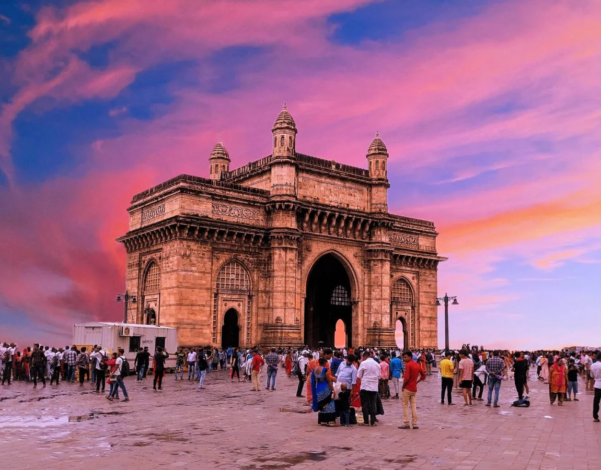
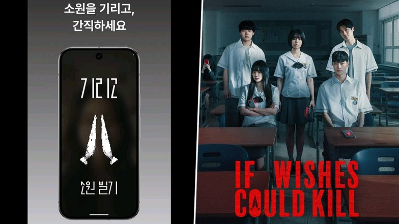

Mumbai is often called the “city of dreams,” but for many, that dream can feel like a shared illusion. The city projects an image of endless opportunity, glamour, and resilience — yet beneath the surface lie stark realities: overcrowded spaces, unaffordable housing, crumbling infrastructure, and widening inequality. This “delusion” comes from the gap between the city’s self-image and the lived experiences of its residents. While billboards and Bollywood sell the idea of limitless success, everyday life for most Mumbaikars involves long commutes, high stress, and constant struggle to keep up. Still, the city’s spirit thrives on hope — perhaps that’s the most enduring part of the illusion.
In the series, Girigo appears as a normal wish-granting app where users record a video stating their wish along with their full name and birthdate (saju). Once the wish is granted, a 24-hour countdown begins, and the user dies when it reaches zero. The app operates like a chain curse, allowing users to delay death only by getting someone else to make a wish, effectively passing the curse forward. The app feeds on human emotions such as fear, jealousy, guilt, and revenge, amplifying the danger for those who use it

